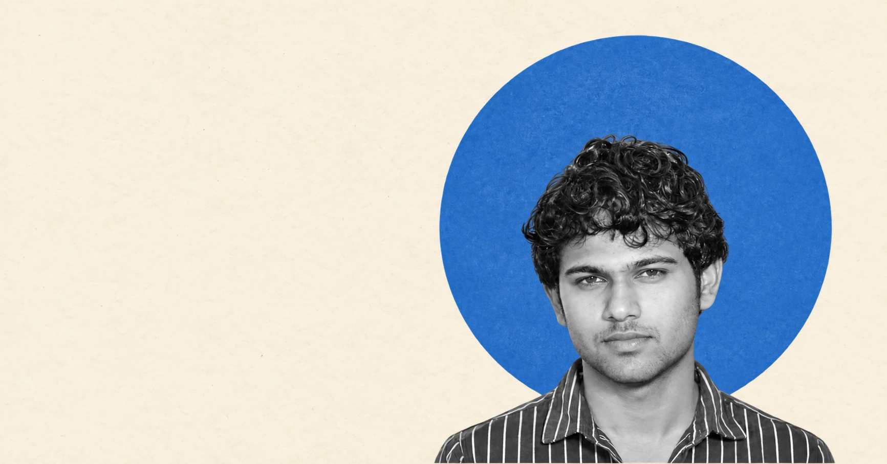

Start with people.
Ask what matters, listen to the context, and understand the real question before chasing a solution.
A PERSONAL SPACE FOR IDEAS WITH PURPOSE.
SCROLL TO DISCOVER ↓
SHASHIKUMARA RENUKAPRASADA HUGARA / THE PERSON BEHIND THE WORLDS
Some doors open into stories.
Some open into things that could exist.
Choose the one that calls to you.
Fiction, plays, and human possibilities.
Reconciliations, reporting, and financial clarity.
Experiences imagined with purpose.
Essays, observations, and ideas to stay with.
04 / THE UNWRITTEN
Step into the storiesA little curiosity can change the question.
A considered decision can change the experience.
Ask what matters, listen to the context, and understand the real question before chasing a solution.
Use words, sketches, journeys, and data to give an idea enough form to question it.
Keep the useful. Rework the unclear. Let evidence and careful judgement shape what comes next.
THE UNIVERSE OF WORK
Follow an idea from its first question to the world it could become.
Choose a dedicated project page above. Each category has its own cards and editing controls.
EVERY FINISHED THING WAS ONCE A WHAT IF.